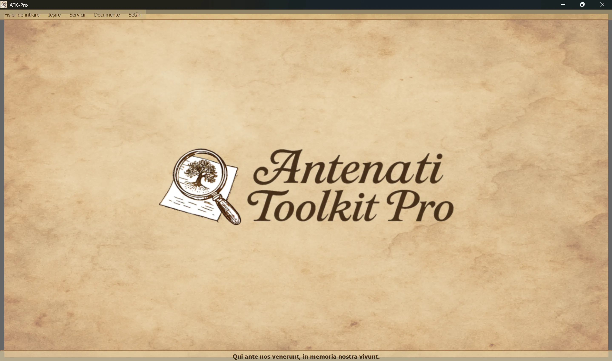

────────────────────────────────────────────────────────────────────────────────
🪟Windows
ATK-Pro-Setup-vx.x.x.exe de pe pagina oficială de lansare🐧 Linux
ATK-Pro-vx.x.x.deb (Debian/Ubuntu) sau .tar.gz din pagina Lansaresudo dpkg -i ATK-Pro-vx.x.x.deb sau faceți dublu clic în Nautilus/Files./ATK-Pro din folderul extras🍎 macOS
ATK-Pro-vx.x.x.dmg din pagina Lansare🪟Windows
C:\Program Files\ATK-Pro\C:\Users\[NumeleTău]\Documents\ATK-Pro\output\C:\Users\[NumeleTău]\Documents\ATK-Pro\input\🐧 Linux
/opt/ATK-Pro/ (deb) sau folderul extras (.tar.gz)~/Documents/ATK-Pro/output/~/Documents/ATK-Pro/input/🍎 macOS
/Applications/ATK-Pro.app~/Documents/ATK-Pro/output/~/Documents/ATK-Pro/input/────────────────────────────────────────────────────────────────────────────────
Limbile disponibile sunt:
Pe baza datelor disponibile la sfârșitul anului 2025, aceste limbi acoperă estimativ aproximativ 98% dintre descendenții italienilor și comunitățile italiene sau italofone din întreaga lume.
La prima rulare, programul creează automat următoarele dosare:
C:\Users\[NumeleTău]\Documents\ATK-Pro\output\C:\Users\[NumeleTău]\Documents\ATK-Pro\output\doc\ (documente implicite)C:\Users\[NumeleTău]\Documents\ATK-Pro\output\reg\ (registre implicite)~/Documents/ATK-Pro/output/input\ analog (opțional, pentru fișierul de intrare)Dosarele temporare sunt create pentru tile-urile descărcate în timpul procesării (tiles_canvas_X/) și, dacă se solicită PDF, fișiere temporare pentru generarea acestuia.
Toate dosarele și fișierele temporare sunt șterse automat după finalizarea procesării.
Rămân doar fișierele finale procesate (imagini în formatele alese, PDF, manifest și metadate).
Pentru a schimba dosarele de ieșire, utilizați Meniu → Setări → „Selectați dosarele de ieșire”. Alegerile dvs. sunt stocate și restaurate automat la următoarea sesiune.
Comanda Setări → Profil de resurse ajustează paralelismul utilizat în timpul descărcării, reconstrucției imaginii și generării PDF:
Profilul nu modifică calitatea, drepturile sau cantitatea documentelor dobândite. Limitele prudențiale specifice portalului continuă să aibă prioritate.
────────────────────────────────────────────────────────────────────────────────
Fereastra principală a Antenati Toolkit Pro are o structură simplă și intuitivă.

În partea de jos se află motto-ul latin „Qui ante nos venerunt, in memoria nostra vivunt”, pentru a aminti importanța rădăcinilor și a memoriei colective.
În partea de sus a ferestrei, sub antet:
[Fișier de intrare] [Ieșire] [Servicii] [Documente] [Setări]
Fiecare meniu conține butoane și opțiuni specifice (vezi secțiunea următoare).
Gestionează încărcarea înregistrărilor IIIF:
├─ Exemplu de intrare │ └─ Vizualizați fișierul eșantion (afișați formatul perechii: mod D/R + URL) ├─ Deschideți intrarea │ └─ Selectați un fișier .txt cu înregistrările dvs. IIIF │ (Trebuie să conțină perechi: modul D/R pe linia 1, URL pe linia 2) └─ Editați intrarea └─ Editați fișierul de intrare încărcat curent (Adăugați/eliminați înregistrări, modificați adresa URL, salvați modificările)
Gestionează procesarea și ieșirea:
├─ Proces │ └─ Începeți să descărcați, să reconstruiți și să salvați imagini │ (Afișează fereastra de progres în timp real) ├─ Deschide folderul de ieșire │ └─ Deschide folderul cu fișierele procesate în Explorer └─ Vizualizați procesarea anterioară └─ Lista înregistrărilor deja procesate
Lista serviciilor integrate:
├─ Căutare asistată de IA │ └─ Sugerează portaluri, piste de cercetare și interogări de genealogie de verificat ├─ Vizualizați imagini │ └─ Vizualizator pentru imaginile descărcate și/sau PDF-urile generate ├─ Vizualizarea metadatelor JSON │ └─ JSON și metadate originale (genealogic, tehnic, EXIF) ├─ OCR avansat │ └─ Texte manuscrise din secolul al XIX-lea, latină bisericească, medieval târziu ├─ Traducere OCR │ └─ Traducerea automată a textelor extrase în limbile selectate └─ Export GEDCOM └─ GEDCOM, Gramps, Family Tree Maker, Ancestry, MyHeritage, WikiTree etc.
Acces la resurse și documentație:
├─ Declinarea răspunderii - Clauze legale și termeni de utilizare ├─ Prezentarea autorului - Contextul autorului proiectului ├─ Prezentarea proiectului - Istoricul, motivațiile, foaia de parcurs ATK-Pro ├─ Ghid - Cuprinsul principal al ghidului modular └─ Informații - Versiune, drepturi de autor, e-mail de contact
Configurare generală a programului:
├─ Schimbați limba │ └─ Selectați limba interfeței (necesită repornire) ├─ Selectați formatele de imagine │ └─ Alegeți între PNG, JPG, TIFF și PDF (cel puțin 1 necesar) │ PDF poate fi selectat singur sau împreună cu formatele de imagine │ Alegerea dvs. este stocată și preselectată automat pentru următoarea sesiune ├─ Selectați dosarele de ieșire │ └─ Mai întâi deschide opțiunea modului folderului, apoi ferestrele de selecție: │ • Un singur folder pentru toată lumea → un singur folder pentru documente și înregistrări │ • Dosare separate doc/reg → un folder pentru toate documentele, unul pentru toate registrele │ • Folder pentru fiecare înregistrare → un folder separat pentru fiecare înregistrare │ Modul și folderele sunt stocate și restaurate la următoarea sesiune ├─ Exportați configurația │ └─ Salvați setările curente într-un fișier ├─ Importați configurația │ └─ Încărcați un fișier de setări salvat anterior (resetează toate preferințele și căile) ├─ Verificați actualizările │ └─ Verificați disponibilitatea noilor versiuni ale programului └─ Închide └─ Încheiați programul (afișați bannerul de asistență PayPal.me)
────────────────────────────────────────────────────────────────────────────────
ATK-Pro este disponibil în 20 de limbi:
Limba poate fi schimbată oricând prin Meniu → Setări → Schimbați limba.
Programul necesită o repornire pentru a aplica noua limbă.
La repornire, programul încarcă automat noua limbă selectată.
Odată cu schimbarea limbii sunt traduse următoarele:
Dacă un model implicit este retras sau nu mai este disponibil, ATK-Pro interoghează catalogul vizibil pentru acreditare, selectează un model general compatibil cu funcția și cu imaginile atunci când este necesar, apoi încearcă până la trei alternative. Fallback-ul nu se activează pentru erori de cotă, rețea sau autentificare.
Suprascrierea modelului: un model introdus manual rămâne obligatoriu și nu este înlocuit niciodată automat.